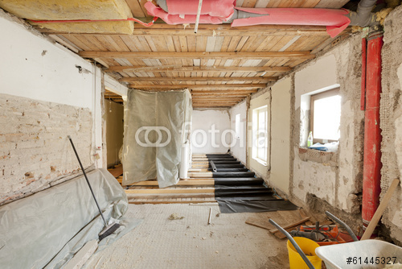

Trentino Lavori di Zampedri Daniele nasce nel 2007,
da una lunga tradizione familiare che vanta più di mezzo
secolo di attività nei lavori edili e stradali.
L’impresa si avvale della collaborazione di operai
specializzati, selezionati per la loro competenza,
esperienza e professionalità.
La società opera nel settore adattandosi alle richieste del
mercato e rispondendo alle esigenze di privati e industrie.
Opere di sostegno in cemento armato, preparazione disottofondi, livellamento di piazzali e centri sportivi, pavimentazioni in conglomerati cementizi, grigliati e mattonelle.
Abitazioni, ristrutturazioni, uffici, studi professionali, punti vendita, manutenzioni di edifici civili e industriali.
Urbanizzazioni ed opere stradali di aree industriali, artigianali e civili abitazioni. Posa di tubazioni per fognature, pozzetti, drenaggio, acquedotti, cavidotti, fibre ottiche, cavi elettrici e telefonici.
Scavi per lo spianamento e la sistemazione del terreno, per i tagli di terrapiedi e per la formazione di cortili. Piani d'appoggio per platee di fondazione, vespai, rampe incassate o trincee stradali, sbancamenti in terreno naturale.
Tagli nell'asfalto con apposita attezzatura dotata di disco a raffreddamento a liquido, opere per la posa di stazioni di rilevamento flusso del traffico.
© 2014 Trentino Lavori di Daniele Zampedri- C.F. - P.I. 0201306229 - Registro Imprese di Trento
Design by: La Grafica
{kind=link}
{kind=link}
{kind=link}
{kind=link}
{kind=link}
{kind=link}